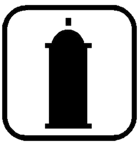
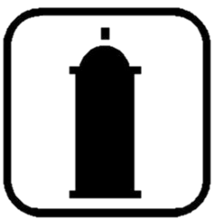

HIP HOP COMO FORMA DE EXPRESIÓN
26 de Agosto de 2014 por María Camila
Un movimiento que llega a Colombia en la década de los 80`s, con una gran acogida , lleva a las personas a tener un nuevo estilo de vida. Hay una revolución personal, se empieza a pensar, vestir,actuar y expresarse de una manera diferente. Su nacimiento ha sido muy discutido, hay quienes dice que sus inicios fueron en bogotá , otros que en las costa pacifica o en suba, la verdad no se sabe con seguridad en cual de los tres lugares comenzó. Lo que si se sabe es que esta nueva forma de expresión urbana la trajeron personas que viajaron a New York en los años 80`s y compraron vídeos de este fenómeno musical, donde se veía ese baila desconocidos y muy llamativo , el breakdance, e incentivo a las personas a querer bailar de esa manera. También, películas como Beat Street, Breakin y Electric Boogaloo fueron las que motivaron a los jóvenes a querer pertenecer a esta nueva cultura que se visualizaba en las pantallas de los teatros.